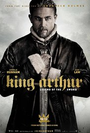

Rey arturo: La leyenda de Excalibur

Título original: King Arthur: Legend of the Sword
Año : 2017
Duración: 120 min
País: Estados Unidos
Dirección: Guy Ritchie
Reparto: Charlie Hunnam, Astrid Bergès-Frisbey, Jude Law, Djimon Hounsou, Eric Bana, Aidan Gillen, Freddie Fox, Craig McGinlay, Tom Wu, Kingsley Ben-Adir, Neil Maskell, Annabelle Wallis, Zac Barker, Oliver Barker, Geoff Bell, Poppy Delevingne, Jacqui Ainsley, Bleu Landau, Georgina Campbell, Rob Knighton, David Beckham, Katie McGrath, Michael McElhatton, Mikael Persbrandt
Género: Fantástico. Acción | Edad Media. Capa y espada. Espada y brujería
Sinopsis: Arturo es un joven intrépido que dirige a su pandilla por los callejones de Londonium. Tras sacar la espada de Excalibur, se verá obligado a tomar algunas duras decisiones. Junto a una misteriosa mujer llamada Guinevere, deberá aprender a manejar la espada, vencer a sus demonios y unir al pueblo para derrotar al tirano Vortigern, quien robó su corona y asesinó a sus padres antes de convertirse en rey.